|
|
| hard corals text index | photo index |
| Phylum Cnidaria > Class Anthozoa > Subclass Zoantharia/Hexacorallia > Order Scleractinia > Family Psammocoridae |
| Crinkled
sandpaper coral Psammocora sp. Family Psammocoridae updated Nov 2019 Where seen? This hard corals with short crinkly branches is commonly seen on many of our Southern shores Features: Colonies 15-30cm, overall rounded shapes, made up of short branches that are irregular, crinkled-looking. Some may have branches that are fat and angular, others flattened and more leaf-like. The tiny corallites don't stick much out of the surface and merely give the skeleton a granular texture which gives the common name. When the polyp is retracted, the tiny holes of the corallite look like tiny petals of a flower. Polyps tiny (0.2cm) with short pointy tentacles. With the tentacles extended, the colony has a furry look. Colours seen include pale blue, green and brown. Among the branches can be seen tiny shrimps, tiny clams and sometimes, fan worms. |
|
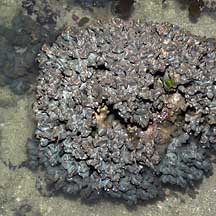 Labrador, Jun 05 |
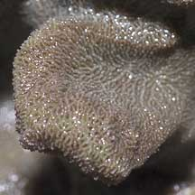 |
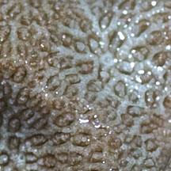 |
|
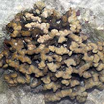 Sisters Island, Nov 05 |
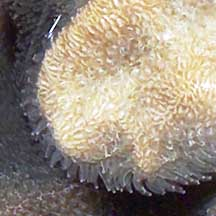 Short pointy tentacles. |
|
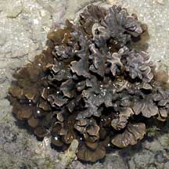 Sisters Island, Jan 07 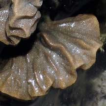 |
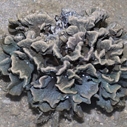 Sisters Island, Jun 07 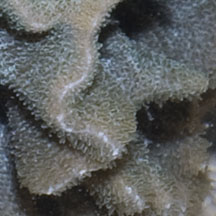 |
|
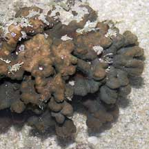 Sisters Island, Jan 06 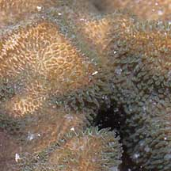 |
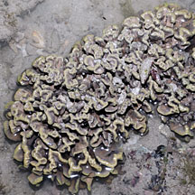 St. John's Island, Apr 12 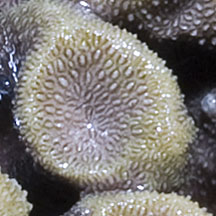 |
*Species are difficult to positively identify without close examination.
On this website, they are grouped by external features for convenience of display.
| Crinkled sandpaper corals on Singapore shores |
On wildsingapore
flickr
|
| Other sightings on Singapore shores |
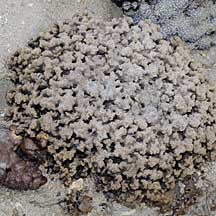 Terumbu Berkas, Jan 10 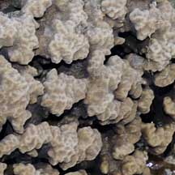 |
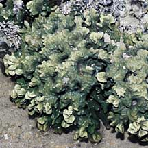 Pulau Pawai, Dec 09 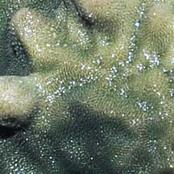 |
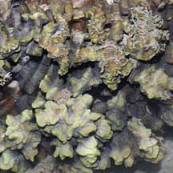 Pulau Senang, Jun 10 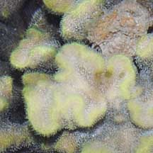 |
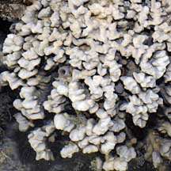 Pulau Salu, Jun 10 |